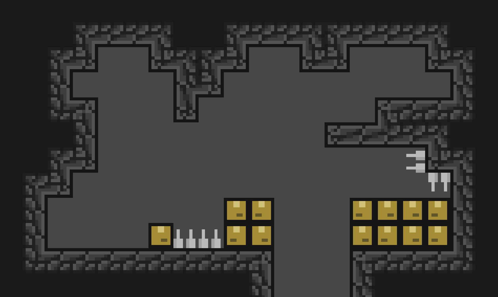

Bonjour à toi,
Je m'appelle Nathan et je suis le chef de projet de Spelunca. Si tu te demandes ce qu'est Spelunca alors laisse-moi te résumer ce que c'est.
Spelunca est le nom du jeu vidéo que l'on développe en équipe.
L'équipe est composée de :
Ce jeu vidéo est un jeu de plateforme en 2D qui n'en est qu'à ses débuts du développement. Ce projet est inscrit dans le cadre de notre 2ème année à l'IUT de Velizy en filière informatique.
Les présentations étant donc faites, tu dois te demander ce que tu es en train de lire. Ceci est la première newsletter de notre projet. Chaque semaine sortira une newsletter pour montrer ce que nous avons fait durant la semaine et donc l'avancement du projet.
Si tu as déjà rejoint notre serveur Discord, alors tu pourras retrouver toutes les newsletters dans le channel (📰newsletter).
Cette semaine était assez primordiale étant donné qu'il s'agit des premières fonctionnalités que nous avons implémenté dans le jeu. Ainsi, nous nous sommes répartis en deux équipes et chacune avait une tâche à effectuer.
Nous avons donc ajouté le niveau "Showcase" qui nous permettra de vous montrer les différentes fonctionnalités ajoutées au jeu, ainsi que les déplacements droite/gauche du joueur.
Ce niveau, utilisé pour montrer les fonctionnalités, comporte des éléments de gameplay pas encore implémentés (piques, vide). Les graphismes, faits par notre équipe, restent très basiques et seront améliorés durant le développement. Cependant, ils permettent de rendre compte du style graphique choisi par notre équipe.

Ajouter les déplacements du joueur impliquait d'ajouter la gestion de la caméra par rapport à celui-ci.
Voici donc un aperçu des déplacements du joueur et de la caméra permettant de suivre le joueur.
N'hésitez pas à suivre le développement et à nous poser des questions sur notre serveur Discord.
Merci d'avoir lu cette première newsletter et à la prochaine !
Team Spelunca.
Rédacteur : Nathan Delorme